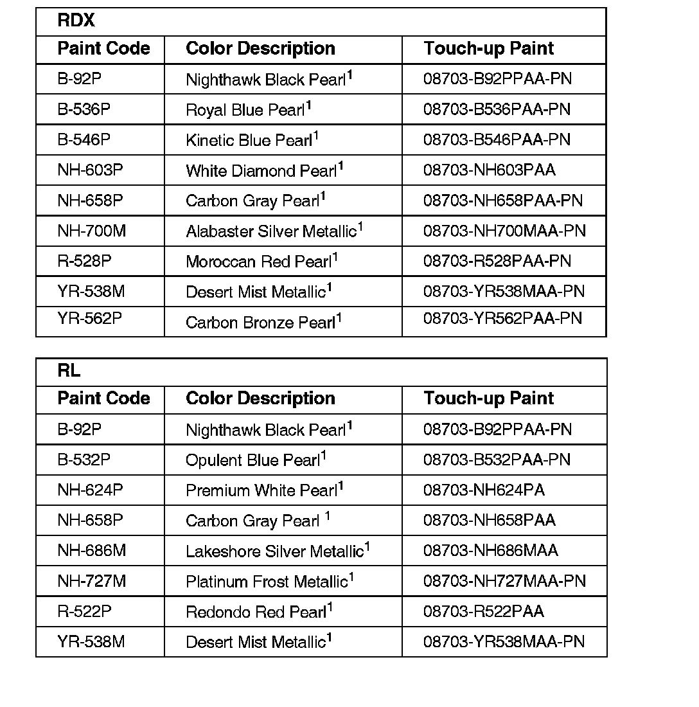
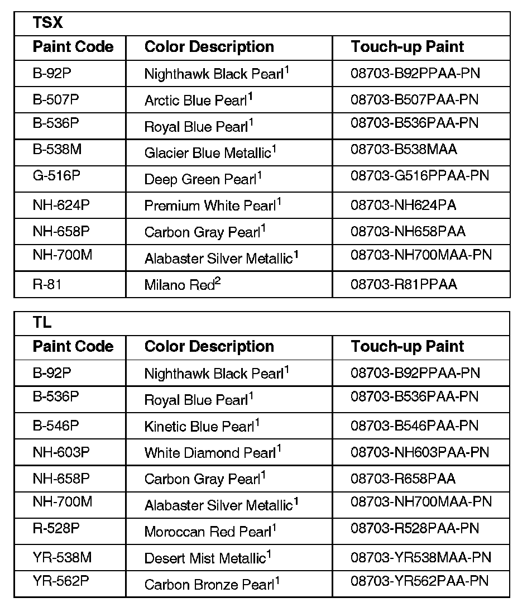
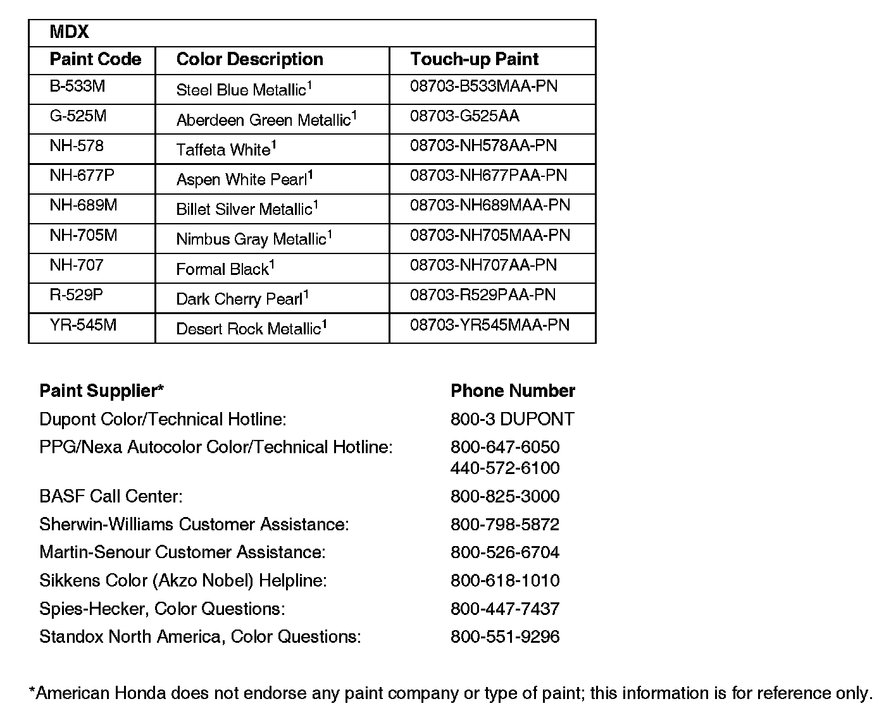
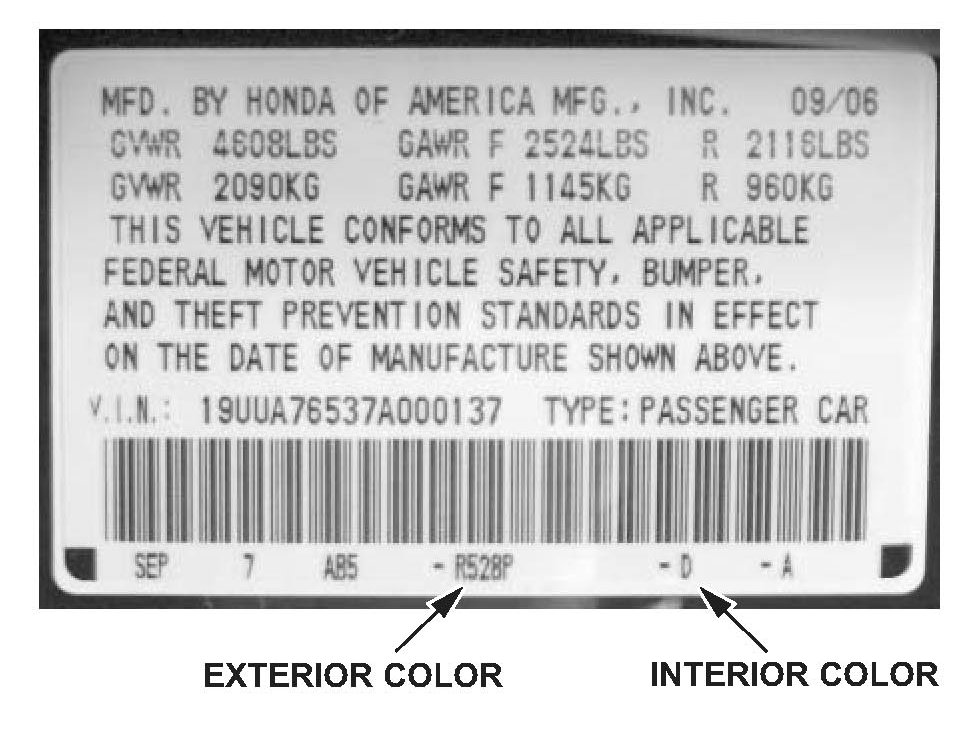
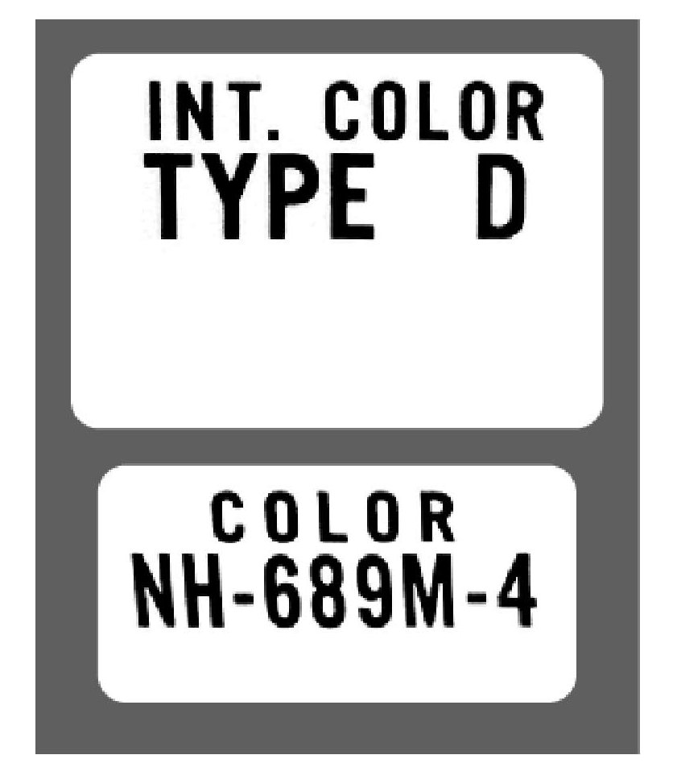

Paint - Paint Codes
06-053December 14, 2006
Applies To:
2007 Acura - ALL
2007 Acura Paint Codes, Exterior and Interior Color Code Locations
Paint formulations are determined by each paint company. For questions about formulas or color matching, call your paint supplier or one of the companies listed at the end of this service bulletin.



The number following the paint description designates the paint process used during the vehicle manufacture:
1 - Two-stage process: A clear coat is applied over the color coat.
2 - Two-stage process: A small amount of color is mixed in the clear coat and applied over the color coat.
3 - Single-stage process: No clear coat is applied.
EXTERIOR AND INTERIOR COLOR CODE LOCATIONS
All color information is on the inside of the driver's doorjamb (B-pillar).

Some models use this type of label with the exterior and interior color codes below the bar code:

MDX models use these types of exterior and interior code labels shown.

Disclaimer